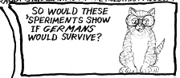
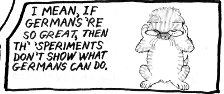
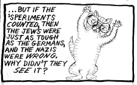
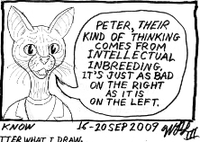
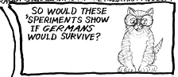
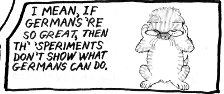
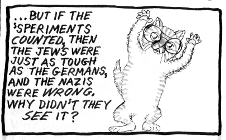
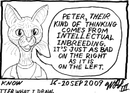

September 17, 2009
Pizza from Scratch, Vs. Anti-Semitism, part 3
![Scene is an exhibit showing two Nazi scientific experiments. There's one manikin, in a striped camp uniform, in a tube from which air can be extracted, to simulate high altitude. Another manikin is also wearing a flotation vest, but is in an open-topped tank, full of ice water. Two families of cats, Rabbi Hicks and family, and Bubba Matsumoto are looking at the displays. Rabbi Hicks says "Nazi scientists used Jewish prisoners for experiments, to find out how long German airmen could survive thin air of high altitude bailouts, and landing in freezing ocean water." Peter, a young kitten with big granny glasses, says "Hey, waitaminit ... The Nazis always bragged 'Germans are way better than everyone else,' right?"](../../img/2009_09_17_r1p1_PfS-AntiS3_1_.png) 

Three families, and Bubba Matsumoto, visit the Virginia Holocaust Museum, where an exhibit shows Nazi mental inconsistency. Rabbi Hicks is wearing a Star Trek original series Enterprise scout mission symbol themed yarmulke. And someone is going to say "No! It;s a keffah!"